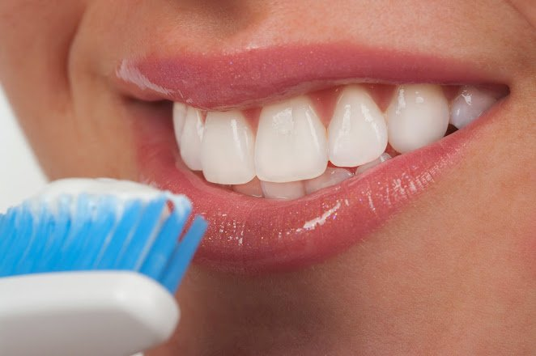

4 Cuidados Diários Essenciais para a Saúde Bucal
Cuidar da saúde bucal vai muito além de ter um sorriso bonito. Uma boca saudável influencia diretamente o bem-estar geral do organismo. Pequenos hábitos diários são os verdadeiros responsáveis por evitar tratamentos complexos no futuro. Confira os 4 cuidados indispensáveis que nossa equipe recomenda:

1. Beba Bastante Água
Beber bastante água é recomendado não apenas por médicos, mas também pelos dentistas. Isso porque o consumo adequado de água faz uma grande diferença para a saúde bucal.
A saliva presente na boca é essencial para cuidar dos dentes e da gengiva, além de ajudar a prevenir diferentes doenças bucais causadas pelas bactérias que habitam nossa boca. Por isso, beber os dois litros de água recomendados diariamente pode fazer uma grande diferença também para os seus dentes.
A saliva em quantidades normais é fundamental para a mastigação, a deglutição e a prevenção de doenças como cáries e gengivite.
2. Cuide da sua Higiene Bucal
A escovação deve ser priorizada após as principais refeições (café da manhã, almoço e jantar). Dessa forma, os alimentos que ficam presos entre os dentes, gengiva e língua não contribuem para a proliferação de bactérias.
A) Escolha a escova certa: O mais recomendado pelos profissionais é usar escovas com cerdas macias ou ultramacias. Elas possuem cerdas mais delicadas e em maior quantidade, causando menos lesões nas gengivas e menos erosão do esmalte. Além disso, troque a escova a cada três meses — após esse período, as cerdas já não têm a mesma eficiência.
B) Escolha o creme dental com flúor: O flúor possui minerais fundamentais para a saúde do dente, prevenindo a desmineralização que pode causar cáries. Entretanto, é muito importante que a pasta não seja engolida, principalmente pelas crianças.
3. Passe o Fio Dental Diariamente
Para ter boa saúde bucal, é essencial usar o fio dental pelo menos uma vez por dia. Os restos de alimentos que ficam presos entre os dentes e que a escova não alcança precisam ser retirados adequadamente.
O acúmulo de resíduos entre os dentes cria o biofilme (placa bacteriana), que pode ser removido em casa com o fio dental utilizado diariamente. Porém, caso a placa se acumule e endureça, ela se transforma em tártaro — com aparência mais escura — que só pode ser removido no consultório odontológico.
O biofilme não tratado pode ainda causar doenças como a periodontite, uma inflamação nos tecidos do dente que provoca retração gengival e, quando não tratada, pode levar à perda do dente.
Prevenção em Dia
Realizar limpezas preventivas periodicamente é muito mais simples e econômico do que tratar doenças avançadas. Cuide hoje para não se arrepender amanhã.
4. Vá ao Dentista Regularmente
Esse é um cuidado extra que, apesar de ser feito apenas de seis em seis meses, tem influência direta na saúde bucal diária. Não é porque você acredita que sua boca está saudável que está livre do consultório — pelo contrário, as limpezas realizadas pelo dentista são essenciais para mantê-lo livre de doenças por muito mais tempo.
Isso deve começar desde a infância: a partir dos seis meses de idade já é possível levar o bebê ao odontopediatra. Realizar essas consultas periódicas acaba sendo muito mais econômico do que pagar por cirurgias e extrações futuras.
Quer cuidar da sua saúde bucal com profissionais de excelência? Agende sua consulta na MD Frossard pelo (21) 3513-8479 ou via WhatsApp.